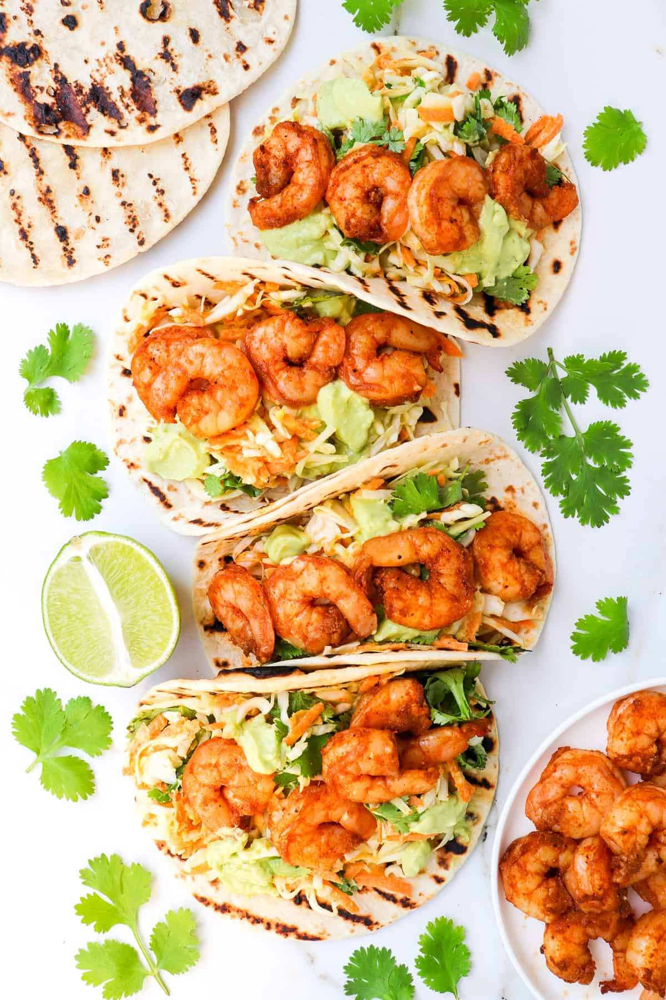

Air Fryer Shrimp Tacos

Description
These air fryer shrimp tacos are the perfect fresh, quick, and healthy meal.
Shrimps are tossed in a smoky dry rub served in warm tortillas with slaw and avocado crema.
Ingredients
- 1lb/450g raw shrimp, peeled and deveined
- 1 teaspoon paprika
- 1 teaspoon cilantro
- 1/2 teaspoon salt
- 1/4 teaspoon black pepper
- 1 tablespoon avocoado oil
- 3 cups shredded green cabbage
- 1 cup grated carrot
- 1/2 cup fresh cilantro
- 6-8 flour tortillas
Avocado crema:
- 1/2 cup plain greek yogurt
- 1 small ripe avocado
- 3-4 tablespoons lime juice
- Salt and pepper
Instructions
- Season shrimp: In a medium bowl, combine the shrimp, olive oil, and seasonings. Toss well.
- Air fry shrimp: Place the shrimp in a single layer in the air fryer basket. Air fry at 400 for 8-10 minutes, shaking the basket halfway
- Avocado crema: Add all the ingredients to a blender or food processor and blend until smooth, scraping sides down as needed
- Cabbage slaw: Toss the cabbage with as much of the avocado crema as desired. Usually 1/2 a cup
- Assemble the tacos and enjoy.